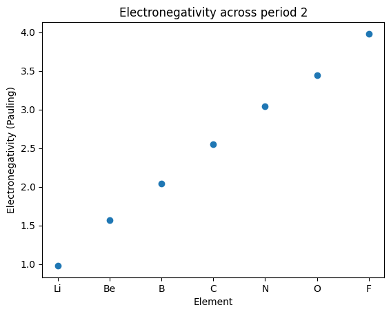
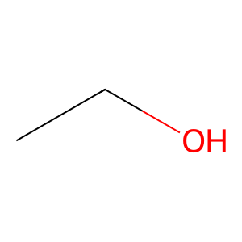
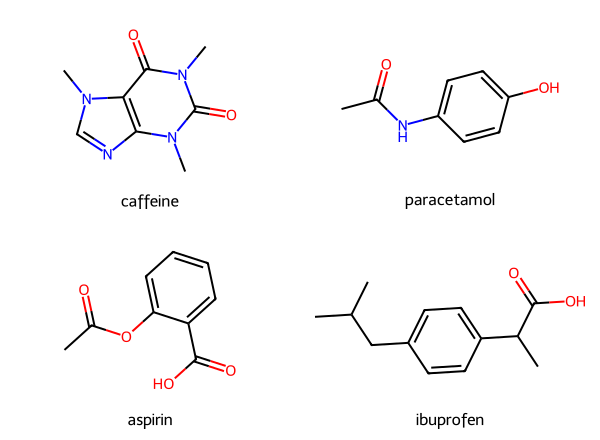

Chemical libraries#
Learning outcomes
After working through this topic, you should be able to:
retrieve and explore elemental data with
mendeleevretrieve compound data from PubChem with
pubchempyrepresent molecules from SMILES and calculate molecular properties with RDKit
balance a chemical equation by solving a linear system
decide when a library is useful and when it is more instructive to write the code yourself
Python has a large ecosystem of libraries, including several developed specifically for chemistry. In this chapter we will use libraries that give access to chemical data, molecular structures and numerical methods.
A useful way to judge a library is to ask what it contributes to our program. Libraries are particularly valuable when they provide:
Data: curated values such as ionisation energies and atomic radii.
Algorithms and visualisation: functionality that would be lengthy or difficult to implement ourselves.
Standardisation: file formats and conventions that allow data to move between different programs.
For simple chemical calculations, however, writing the function ourselves can be more instructive. It keeps the relationship between the chemistry and the code visible and makes the calculation easy to adapt.
Part |
Purpose |
Examples |
|---|---|---|
1 |
Chemical data |
|
2 |
Structure and representation |
RDKit |
3 |
Calculations we can program ourselves |
stoichiometry and balancing |
Installation#
Run the cell below once before using the examples. The exclamation mark sends the command to the pip package manager rather than treating it as ordinary Python code.
!pip install mendeleev pubchempy rdkit sympy
Libraries that provide access to data#
Mendeleev#
The periodic table can be treated as a large dataset. Properties such as electronegativity, ionisation energy and atomic radius come from measurements and models; they are not quantities that we can reproduce with a few lines of elementary Python. The mendeleev library gives us convenient access to such elemental data.
The function element creates an object representing an element. The objects share the same kinds of attributes, but the values differ from element to element.
from mendeleev import element
sulfur = element("S") # Alternatively: element(16)
print(sulfur.name)
print(sulfur.symbol)
print(sulfur.atomic_number)
print(sulfur.atomic_weight)
print(sulfur.block, sulfur.period, sulfur.group_id)
Sulfur
S
16
32.06
p 3 16
Electronegativity is obtained with a method call rather than as a simple attribute because electronegativity can be defined using several different scales. We therefore need to specify which scale we want.
print("Pauling: ", sulfur.electronegativity("pauling"))
print("Allen: ", sulfur.electronegativity("allen"))
print("Mulliken:", sulfur.electronegativity("mulliken"))
Pauling: 2.58
Allen: 15.31
Mulliken: 6.218557015
Check your understanding: Why are the numbers so different?
The three scales give very different numerical values for sulfur. Look up how the scales are defined. Which units are used? Why can the values not be compared directly?
Suggested answer
The Pauling scale is dimensionless and is based on bond energies. The Allen and Mulliken scales are based on energy quantities and are commonly expressed in electronvolts. The numerical values therefore do not share a common scale. Meaningful comparisons concern, for example, the ordering of elements on each scale or relative differences after normalisation.
This illustrates a general rule: a numerical value from a library must always be interpreted together with its definition and unit.
Several elements with lists#
We do not need to turn the whole periodic table into a table in order to inspect a simple trend. Instead, we can keep the element symbols in a list and retrieve one element at a time. This builds directly on lists and loops from the earlier chapters.
# Elements in period 2
symbols = ["Li", "Be", "B", "C", "N", "O", "F", "Ne"]
for symbol in symbols:
element_data = element(symbol)
print(symbol, element_data.atomic_number, element_data.atomic_weight)
Li 3 6.94
Be 4 9.0121831
B 5 10.81
C 6 12.011
N 7 14.007
O 8 15.999
F 9 18.998403163
Ne 10 20.1797
Missing values#
A scientific database does not necessarily contain a value for every property of every element. Missing values are often represented by None. We should therefore check a value before using it in a calculation or plot.
symbols_without_value = []
for atomic_number in range(1, 119):
element_data = element(atomic_number)
electronegativity = element_data.electronegativity("pauling")
if electronegativity is None:
symbols_without_value.append(element_data.symbol)
print("Elements without a Pauling electronegativity:")
print(symbols_without_value)
Elements without a Pauling electronegativity:
['He', 'Ne', 'Ar', 'Kr', 'Pm', 'Eu', 'Tb', 'Yb', 'Rn', 'Am', 'Cm', 'Bk', 'Cf', 'Es', 'Fm', 'Md', 'No', 'Lr', 'Rf', 'Db', 'Sg', 'Bh', 'Hs', 'Mt', 'Ds', 'Rg', 'Cn', 'Nh', 'Fl', 'Mc', 'Lv', 'Ts', 'Og']
Check your understanding: Which values are missing?
One group of the periodic table is clearly represented among the missing values. Which group, and what is the chemical explanation?
Several of the heaviest elements are also missing values. Why are their chemical properties difficult to determine experimentally?
Make two lists, one containing atomic numbers and one containing Pauling electronegativities. Add only elements that actually have a value, and make a scatter plot.
Suggested answer
The noble gases are prominent because the Pauling scale is based on bonding and noble gases form comparatively few ordinary bonds. Many of the heaviest elements are produced only in tiny quantities and have short half-lives, which makes measurement difficult. A possible plotting approach is shown below.
import matplotlib.pyplot as plt
atomic_numbers = []
electronegativities = []
for atomic_number in range(1, 119):
element_data = element(atomic_number)
value = element_data.electronegativity("pauling")
if value is not None:
atomic_numbers.append(atomic_number)
electronegativities.append(value)
plt.scatter(atomic_numbers, electronegativities)
plt.xlabel("Atomic number")
plt.ylabel("Electronegativity (Pauling)")
plt.show()
Trends across a period#
For period 2 we can use the element symbols directly on the x-axis.
import matplotlib.pyplot as plt
symbols = ["Li", "Be", "B", "C", "N", "O", "F"]
electronegativities = [element(symbol).electronegativity("pauling") for symbol in symbols]
plt.scatter(symbols, electronegativities)
plt.xlabel("Element")
plt.ylabel("Electronegativity (Pauling)")
plt.title("Electronegativity across period 2")
plt.show()

Mendeleev also provides properties that occur as collections rather than single values. Successive ionisation energies are a good example.
sodium = element("Na")
magnesium = element("Mg")
for ionisation_step, energy in sodium.ionenergies.items():
print("Na", ionisation_step, energy)
print()
for ionisation_step, energy in magnesium.ionenergies.items():
print("Mg", ionisation_step, energy)
Na 1 5.13907696
Na 2 47.28636
Na 3 71.62
Na 4 98.936
Na 5 138.404
Na 6 172.23
Na 7 208.504
Na 8 264.192
Na 9 299.856
Na 10 1465.0992
Na 11 1648.702285
Mg 1 7.646236
Mg 2 15.035271
Mg 3 80.1436
Mg 4 109.2654
Mg 5 141.33
Mg 6 186.76
Mg 7 225.02
Mg 8 265.924
Mg 9 327.99
Mg 10 367.489
Mg 11 1761.8049
Mg 12 1962.663889
The large jump after the first ionisation of sodium and after the second ionisation of magnesium reflects the transition from removing valence electrons to removing an electron from a closed inner shell. The database gives us the values; chemistry is still needed to interpret the pattern.
PubChemPy#
PubChem is an open database containing information about chemical compounds. pubchempy communicates with PubChem through an API and makes the data available as Python objects. Because this depends on an online service, the code requires an internet connection when it is run.
import pubchempy as pcp
matches = pcp.get_compounds("paracetamol", "name")
paracetamol = matches[0]
print("PubChem CID: ", paracetamol.cid)
print("Molecular formula:", paracetamol.molecular_formula)
print("Molar mass: ", paracetamol.molecular_weight)
print("IUPAC name: ", paracetamol.iupac_name)
print("Canonical SMILES: ", paracetamol.connectivity_smiles)
PubChem CID: 1983
Molecular formula: C8H9NO2
Molar mass: 151.16
IUPAC name: N-(4-hydroxyphenyl)acetamide
Canonical SMILES: CC(=O)NC1=CC=C(C=C1)O
A database search can return more than one match, so we should not blindly assume that the first object is always the intended compound. Identifiers such as a PubChem CID or InChIKey are safer than ambiguous everyday names when reproducibility matters.
compound_names = ["caffeine", "ibuprofen", "aspirin"]
for name in compound_names:
matches = pcp.get_compounds(name, "name")
compound = matches[0]
print(name, compound.molecular_formula, compound.molecular_weight)
caffeine C8H10N4O2 194.19
ibuprofen C13H18O2 206.28
aspirin C9H8O4 180.16
Libraries for structure and representation#
RDKit and SMILES#
RDKit is a cheminformatics library for representing and analysing molecular structures. A convenient text representation of a small molecule is SMILES (Simplified Molecular Input Line Entry System). For example, ethanol can be written as CCO.
A SMILES string is a representation, not the molecule itself. Different valid SMILES strings can describe the same molecular graph, and a plain SMILES string does not by itself specify all aspects of a three-dimensional structure.
from rdkit import Chem
from rdkit.Chem import Draw
smiles = "CCO"
molecule = Chem.MolFromSmiles(smiles)
Draw.MolToImage(molecule)

If the SMILES string is invalid, Chem.MolFromSmiles normally returns None. It is good practice to check this before continuing.
smiles = "this-is-not-smiles"
molecule = Chem.MolFromSmiles(smiles)
if molecule is None:
raise ValueError("Invalid SMILES")
Invalid SMILES
[08:00:52] SMILES Parse Error: syntax error while parsing: this-is-not-smiles
[08:00:52] SMILES Parse Error: check for mistakes around position 1:
[08:00:52] this-is-not-smiles
[08:00:52] ^
[08:00:52] SMILES Parse Error: Failed parsing SMILES 'this-is-not-smiles' for input: 'this-is-not-smiles'
Several molecules#
A dictionary is useful when we want to keep a compound name and its SMILES representation together.
from rdkit import Chem
from rdkit.Chem import Draw
smiles = {
"caffeine": "Cn1c(=O)c2c(ncn2C)n(C)c1=O",
"paracetamol": "CC(=O)NC1=CC=C(C=C1)O",
"aspirin": "CC(=O)OC1=CC=CC=C1C(=O)O",
"ibuprofen": "CC(C)CC1=CC=C(C=C1)C(C)C(=O)O",
}
names = list(smiles.keys())
molecules = [Chem.MolFromSmiles(smiles[name]) for name in names]
Draw.MolsToGridImage(molecules, molsPerRow=2, legends=names, subImgSize=(300, 220))

From structure to molecular properties#
Once RDKit has constructed a molecular graph, it can calculate many descriptors from that representation.
from rdkit.Chem import Descriptors, Lipinski
caffeine = Chem.MolFromSmiles(smiles["caffeine"])
print("Molar mass: ", Descriptors.MolWt(caffeine))
print("LogP: ", Descriptors.MolLogP(caffeine))
print("H-bond donors: ", Lipinski.NumHDonors(caffeine))
print("H-bond acceptors: ", Lipinski.NumHAcceptors(caffeine))
Molar mass: 194.194
LogP: -1.0293
H-bond donors: 0
H-bond acceptors: 3
These are computed descriptors. They are not experimental measurements retrieved from a database, and their meaning depends on the definition and algorithm used. That distinction becomes important when descriptors are used in modelling.
Exercise: Lipinski’s rule of five#
A commonly used heuristic in medicinal chemistry considers four simple molecular properties: molar mass below 500 g/mol, LogP below 5, at most 5 hydrogen-bond donors and at most 10 hydrogen-bond acceptors. The rule is not a law of chemistry and does not decide whether a molecule is a useful drug; it is a screening heuristic.
def lipinski_violations(smiles_string):
molecule = Chem.MolFromSmiles(smiles_string)
if molecule is None:
raise ValueError("Invalid SMILES")
violations = 0
if Descriptors.MolWt(molecule) > 500:
violations += 1
if Descriptors.MolLogP(molecule) > 5:
violations += 1
if Lipinski.NumHDonors(molecule) > 5:
violations += 1
if Lipinski.NumHAcceptors(molecule) > 10:
violations += 1
return violations
for name, smiles_string in smiles.items():
print(f"{name:20} {lipinski_violations(smiles_string)} violations")
caffeine 0 violations
paracetamol 0 violations
aspirin 0 violations
ibuprofen 0 violations
SMARTS and functional groups#
SMARTS is a pattern language related to SMILES. Instead of describing one particular molecule, a SMARTS pattern can describe a structural motif that we want to find.
patterns = {
"carboxylic acid": "C(=O)[OH]",
"ester": "C(=O)O[#6]",
"amide": "C(=O)N",
"alcohol/phenol": "[OX2H]",
"aromatic ring": "a1aaaaa1",
}
aspirin = Chem.MolFromSmiles(smiles["aspirin"])
for group, smarts in patterns.items():
pattern = Chem.MolFromSmarts(smarts)
count = len(aspirin.GetSubstructMatches(pattern))
print(f"{group:18}: {count}")
carboxylic acid : 1
ester : 1
amide : 0
alcohol/phenol : 1
aromatic ring : 1
A SMARTS match is only as chemically meaningful as the pattern we define. A very broad pattern may count motifs that we did not intend, whereas a very restrictive one may miss legitimate variants.
From 2D to 3D#
RDKit can generate a possible three-dimensional conformer from a molecular graph. This is useful for visualisation, but the generated conformer should not automatically be interpreted as the unique or experimentally dominant structure in solution.
from rdkit.Chem import AllChem
ethanol = Chem.AddHs(Chem.MolFromSmiles("CCO"))
AllChem.EmbedMolecule(ethanol, randomSeed=42)
AllChem.MMFFOptimizeMolecule(ethanol)
mol_block = Chem.MolToMolBlock(ethanol)
print(mol_block[:500])
RDKit 3D
9 8 0 0 0 0 0 0 0 0999 V2000
-0.8883 0.1670 -0.0273 C 0 0 0 0 0 0 0 0 0 0 0 0
0.4658 -0.5116 -0.0368 C 0 0 0 0 0 0 0 0 0 0 0 0
1.4311 0.3229 0.5867 O 0 0 0 0 0 0 0 0 0 0 0 0
-0.8487 1.1175 -0.5695 H 0 0 0 0 0 0 0 0 0 0 0 0
-1.6471 -0.4704 -0.4896 H 0 0 0 0 0 0 0 0 0 0 0 0
-1.1964 0.3978 0.9977 H 0 0 0 0 0 0 0 0 0 0 0 0
0.7920 -0
Calculations we can program ourselves#
Not every chemical calculation needs a specialised library. Simple stoichiometric relations are often clearer when written directly as functions.
AVOGADRO_CONSTANT = 6.02214076e23
def amount_of_substance(mass, molar_mass):
"""Return amount of substance in mol from mass in g and molar mass in g/mol."""
return mass / molar_mass
def mass(amount_mol, molar_mass):
"""Return mass in g from amount in mol and molar mass in g/mol."""
return amount_mol * molar_mass
def concentration(amount_mol, volume_L):
"""Return concentration in mol/L."""
return amount_mol / volume_L
def dilute(concentration_initial, volume_initial, volume_final):
"""Return final concentration from c1*V1 = c2*V2."""
return concentration_initial * volume_initial / volume_final
def number_of_molecules(amount_mol):
"""Return number of entities from amount of substance in mol."""
return amount_mol * AVOGADRO_CONSTANT
The advantage of these functions is transparency: the equations are immediately recognisable and we can adapt them to the problem. A third-party library would add little value here unless it also handled units, uncertainty propagation or a larger chemical workflow.
Balancing equations with a linear system — optional material#
Balancing a reaction can be formulated as a null-space problem. Each row of a matrix represents conservation of one element and each column represents a chemical species. The stoichiometric coefficients form a vector \(x\) satisfying
For example, for combustion of ethane,
we can let reactant columns have positive element counts and product columns negative counts.
from sympy import Matrix
# Columns: C2H6, O2, CO2, H2O
# Rows: C, H, O
A = Matrix([
[2, 0, -1, 0],
[6, 0, 0, -2],
[0, 2, -2, -1],
])
solution = A.nullspace()[0]
coefficients = solution * 2
print(coefficients)
Matrix([[2/3], [7/3], [4/3], [2]])
The resulting coefficient ratio is \(2:7:4:6\), giving
The chemistry appears here as conservation constraints, while SymPy supplies a general linear-algebra algorithm. This is a good example of a library doing a mathematically generic job inside a chemical problem.
Evaluating a library#
Before building a workflow around a scientific library, ask:
What is the source of the data or algorithm?
What does the returned quantity mean, including units and conventions?
How does the library represent missing or invalid data?
Is the package maintained and documented?
Can the calculation be reproduced later? Record package versions when that matters.
Would a short transparent function be better for this particular task?
Libraries save us from reinventing mature tools, but they do not remove the need for chemical judgement.
Exercises#
Exercise 1 — periodic trends
Use mendeleev to compare the Pauling electronegativity and first ionisation energy across period 3. Make two plots and explain the broad chemical trends and any exceptions. Check explicitly for missing values before plotting.
Exercise 2 — PubChem and identifiers
Retrieve caffeine, aspirin and ibuprofen from PubChem. Report CID, molecular formula, molar mass and canonical SMILES. Explain why an identifier is preferable to a common name in a reproducible workflow.
Exercise 3 — molecular descriptors
Use RDKit to calculate molar mass, LogP, H-bond donors and H-bond acceptors for at least four molecules. Which of these are directly encoded by the molecular graph, and which depend on a computational definition or model?
Exercise 4 — SMARTS
Choose a functional group and construct or look up a SMARTS pattern for it. Test the pattern on several molecules and inspect both matches and non-matches. Discuss one way in which your pattern could give a chemically misleading result.
Exercise 5 — stoichiometric functions
Write a function mass_percent(element_mass, sample_mass) that returns a mass percentage. Add a check that prevents a zero or negative sample mass. Why is this simple function easier to audit than an opaque specialised package call?
Exercise 6 — balancing
Use the matrix approach to balance \(\mathrm{Fe + O_2 \rightarrow Fe_2O_3}\). Then explain what information you had to supply to the matrix before the computer could solve the problem.